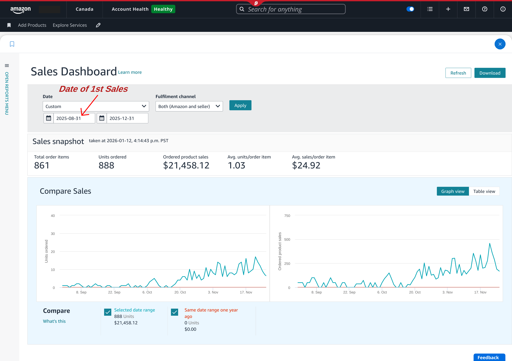
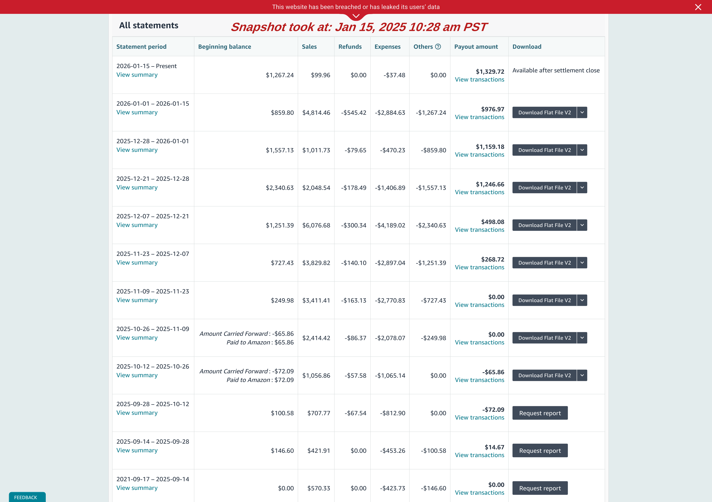

Year-1 Amazon Private Label Operational Overview (Canada Marketplace)¶
This document is a Year-1 operational transparency artifact for an actively managed client-owned Amazon Private Label account.
- Reporting Period: January 2025 – December 2025
- Marketplace: Amazon Canada
- Currency: Canadian Dollar (CAD)
- Prepared by: Muhammad Ibtisam Iqbal
- Operational Role: Amazon Private Label Operator & Growth Lead
Introduction¶
This document exhibits a Year-1 operational overview of a client-owned Amazon Private Label business that was planned, built, launched, and brought into live operation from inception under my structured, continuous, and retained execution.
Its purpose is to serve as an operational transparency artifact, recording what was executed and when during the first year of account operation. The focus is on execution milestones and client-side capital utilization, rather than strategic evaluation or outcome judgment.
This is not a project completion report.
It represents a formal operational checkpoint within an ongoing account lifecycle, with execution continuing beyond the reporting period.
All business-related expenses during the reporting period were paid directly by the client using his own credit card, based on my execution planning and guidance.
Amazon-related charges (such as fees and advertising spend) were automatically net-settled by Amazon through its standard billing and payout settlement process.
Table of Contents¶
- Executive Overview
-
Phase 1 — Private Label Build & Pre-Launch Capital Utilization
- View A: Time-Based Capital Deployment
- View B: Product-Attributable Launch Investment
-
Post-Launch Capital Utilization (Year-1 Continuation)
- Phase 2 — Early Revenue Signals (Live Operations Checkpoint)
- Supporting Evidence — Operational Snapshots
- Closing Notes
Executive Overview¶
This document summarizes the first operational year of the account, covering the transition from initial build execution to live marketplace activity.
During the reporting period, operations progressed through two natural execution cycles.
-
The first was a build and launch preparation cycle, where client capital was deployed in controlled stages to validate products, suppliers, logistics execution, and listing readiness.
-
The second was a live marketplace cycle, where products became active on Amazon and began generating revenue under real fulfillment, advertising, and customer demand conditions.
By the end of the year, the account had successfully transitioned into live selling, with consistent unit movement observed during the final quarter.
Operations continue beyond this checkpoint into the next execution cycle, with early traction now translating into active cross-marketplace execution. The same private label listings are currently under expansion to the United States marketplace, while additional platform distribution (including Walmart Marketplace) has been identified as a subsequent phase following account onboarding.
Phase 1 — Private Label Build & Pre-Launch Capital Utilization¶
Phase 1 documents the complete pre-launch execution cycle, covering all operational steps required to bring inventory live on Amazon.
This includes execution related to product validation, supplier sourcing, manufacturing coordination, quality inspection, logistics planning, catalog readiness, and listing asset preparation.
To maintain clarity, Phase 1 is presented through two complementary allocation views, each describing the same execution cycle from a different operational perspective.
View A — Time-Based Capital Deployment¶
Scope¶
View A records when client capital was utilized and which execution milestones triggered expenditure.
Only actions resulting in direct financial outflow are reflected numerically. Operational work without immediate cost impact is referenced only where necessary to explain capital timing.
The focus remains on decision-driven capital utilization, not task narration.
The table below summarizes finalized costs. All calculations are formula-driven and available in the linked Google Sheet.
| Month | Activities Performed (Cost-Triggered Milestones) | Expense Items Included | Monthly Expenditure | Cumulative Investment |
|---|---|---|---|---|
| Dec 2024 | Legal entity setup executed to establish the business structure required for operating an Amazon private label account. | Company incorporation cost | 213.80 | 213.80 |
| Jan 2025 | Digital identity established for the business to support brand ownership and external presence. | Company domain purchase | 21.00 | 234.80 |
| Feb 2025 | Intellectual property risk validation and competitor benchmarking initiated to support product selection and its development. Brand identity groundwork executed. | Patent search + competitor product purchase (2 units) + logo design | 141.57 | 376.37 |
| Mar 2025 | Supplier validation phase executed through controlled sample production. Samples from shortlisted suppliers shipped to home address (Canada) and benchmarked against competitor products prior to bulk commitment. | Samples production and their shipment to Canada | 220.68 | 597.05 |
| May 2025 | Manufacturing capacity secured via advance payments for both selected products. Additional sample shipment routed to Pakistan for product photography preparation. Brand trademark filing executed to secure ownership. | Manufacturing advance payment (both products) + sample shipment to Pakistan + trademark filing | 1,884.68 | 2,481.73 |
| Jun 2025 | Product identifiers procured to meet Amazon catalog requirements. Manufacturing cycles completed and balance payments released. Third-party quality inspection executed prior to shipment authorization. | UPC purchase + manufacturing balance payment (both products) + inspection fee (Product 1) | 4,044.71 | 6,526.44 |
| Jul 2025 | Finished goods dispatched to Amazon fulfillment network. Listing conversion assets produced. Brand infrastructure finalized to support off-Amazon presence. Product-level inspection completed. | Freight (Product 1) + listing images & video (Product 1) + inspection fee (Product 2) + brand domain + SSL hosting + website development | 2,800.97 | 9,327.41 |
| Aug 2025 | Pre-launch corrections and final enablement completed. SKU relabeling executed to resolve FNSKU discrepancies. Product-level media assets finalized. Remaining logistics charges settled. | SKU reprinting + listing images & video (Product 2) + freight (Product 2) | 1,263.57 | 10,590.98 |
View B — Product-Attributable Launch Investment¶
View B reorganizes pre-launch capital utilization from a product-centric perspective.
To ensure clarity, costs are classified as:
- Business-level setup costs, supporting the account as a whole
- Shared operational costs, benefiting multiple products
- Product-attributable costs, directly required to make a specific product launch-ready
Only product-attributable costs are included in this view.
Scope¶
While View A explains when capital was utilized, View B explains how capital was absorbed at the product and SKU level prior to sales.
This enables visibility into per-product investment structure and SKU formation without introducing outcome interpretation.
| Product | Units Ordered | SKU Structure | Manufacturing (Initial) | Manufacturing (Balance) | Inspection | Freight | Images & Media | Total |
|---|---|---|---|---|---|---|---|---|
| Product 1 | 500 | Single SKU (Pack of 1) | 1,087.30 | 2,492.79 | 171.39 | 1,766.13 | 618.00 | 6,135.61 |
| Product 2 | 1,000 | 2 SKUs (Pack of 1 & Pack of 2) | 280.00 | 1,285.24 | 142.53 | 597.00 | 625.00 | 2,929.77 |
| Total | 1,500 | 3 SKUs | 1,367.30 | 3,778.03 | 313.92 | 2,363.13 | 1,243.00 | 9,065.38 |
Capital Reconciliation — View A vs View B¶
The variance between View A and View B represents essential shared and one-time setup costs that enable account operation but cannot be cleanly assigned to individual products.
This separation is intentional and ensures transparency rather than omission.
Post-Launch Capital Utilization (Year-1 Continuation)¶
The Phase 1 tables reflect pre-launch execution only, covering structured build activity through August 2025, when initial inventory became live.
Following launch, capital continued to be utilized as part of normal live operations.
These expenditures are intentionally excluded from Phase 1 to avoid blending build-stage execution with live operating activity.
Key Post-Launch Utilization During Year-1¶
-
Inventory Restocking (Live Operations) Client capital was utilized for inventory replenishment based on sell-through behavior and forward coverage planning.
-
Launch-Stage Demand Activation Controlled unit distribution was executed to establish early listing credibility and conversion readiness under live marketplace conditions.
These represent operational continuation investments, not pre-launch build costs.
Year-1 Capital Summary (Complete)¶
- Pre-Launch Capital Utilization (Phase 1): 10,590.98
- Post-Launch Operating Utilization: 4,015.13
Total Client Capital Utilized During Year-1: 14,606.11
This figure represents the full first-year operational capital footprint, spanning both structured build-out and live execution.
Phase 2 — Early Revenue Signals (Live Operations Checkpoint)¶
Phase 2 records initial revenue behavior observed after inventory became live.
This section does not attempt profitability analysis, performance judgment, or business valuation.
Its purpose is to:
- Record when sales activity began
- Observe month-wise revenue progression
- Capture SKU-level operational behavior under live conditions
This represents a mid-cycle operational checkpoint, not a terminal assessment.
Scope & Methodology¶
- No automated profitability tools were deployed at this stage
- All figures originate from formula-driven Google Sheets
- Values are manually reconciled for presentation only
- Minor variances are expected at this maturity level
Only final outputs are displayed here for readability.
| SKU | Month | Sales | Units Sold | Net Result |
|---|---|---|---|---|
| SKU 1 | Sep 2025 | 1,079.77 | 23 | -295.34 |
| Oct 2025 | 2,073.73 | 62 | -508.43 | |
| Nov 2025 | 4,163.82 | 136 | -1,055.13 | |
| Dec 2025 | 6,022.21 | 178 | +12.70 | |
| SKU 2 | Oct 2025 | 475.65 | 35 | -105.53 |
| Nov 2025 | 1,325.38 | 101 | -254.54 | |
| Dec 2025 | 2,277.82 | 173 | -404.81 | |
| SKU 3 | Oct 2025 | 119.95 | 5 | +18.22 |
| Nov 2025 | 1,615.60 | 67 | +527.89 | |
| Dec 2025 | 2,609.95 | 108 | +839.71 | |
| TOTAL | Sep 2025 | 1,079.77 | 23 | -312.43 |
| Oct 2025 | 2,669.33 | 102 | -595.74 | |
| Nov 2025 | 7,104.80 | 304 | -781.78 | |
| Dec 2025 | 10,909.98 | 459 | +447.61 | |
| GRAND TOTAL | 21,457.56 | 888 | -1242.34 |
All numbers shown above are calculated using formulas in the following Google Sheet:
This includes:
- Unit cost derivation from Phase 1 expenses
- SKU-level COGS logic
- Net result formulas
- Month-wise and total aggregation
Supporting Evidence — Operational Snapshots¶
The following snapshots are included as primary source references extracted directly from Amazon Seller Central.
They are provided to validate recorded activity, not to introduce interpretation.
Snapshot 1 — Sales Dashboard¶
Validates first sale date, cumulative revenue, and unit sold.

Snapshot 2 — Inventory Status (FBA)¶
Confirm live inventory movement and real sell-through

Snapshot 3 — Amazon Ads Invoices¶
Demonstrate advertising spend transitioned primarily to seller-payable (sales-funded) settlement, indicating early cash-flow circulation

Snapshot 4 — Account Statements & Payouts¶
Confirm revenue realization through actual payouts, beyond dashboard metrics

Closing Notes¶
This document records the first operational cycle of a client-owned Amazon Private Label business, covering execution from structured pre-launch activity through early live marketplace operation.
Phase 1 reflects controlled build execution and disciplined capital utilization.
Phase 2 captures initial live-market behavior without over-interpreting short-term financial outcomes.
The account remains under active management beyond this checkpoint.
This artifact serves as a transparent operational record, not a performance verdict or strategic forecast.